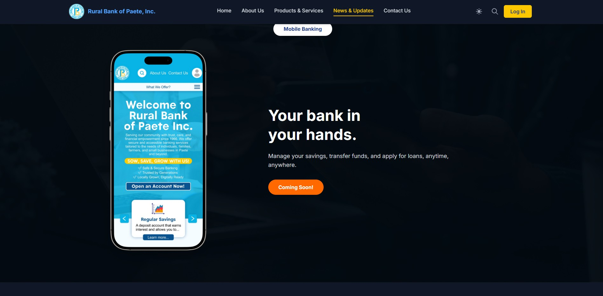
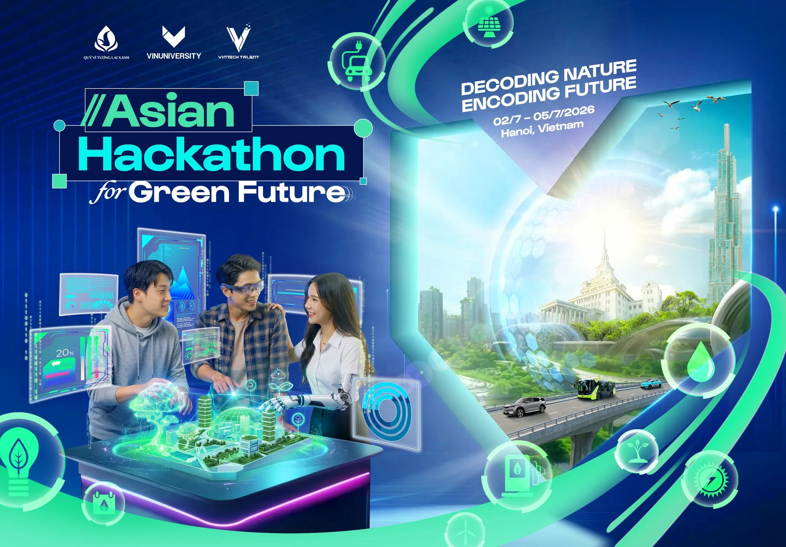

Ken's Portfolio
.
Home
About
Projects
Resume
Socials
Home
About
Projects
Resume
Socials


Hover projects to Preview
Project
Section.
Hover to view • Click to explore
CMS PAETE LANDING
BB88 WEB & CMS
PAETE ES6 HYDRATION
DYNAMIC FRONT-END
GREEN FUTURE
HACKATHON UI/UX
My Role: Front-End Architecture
← Go Back to Projects